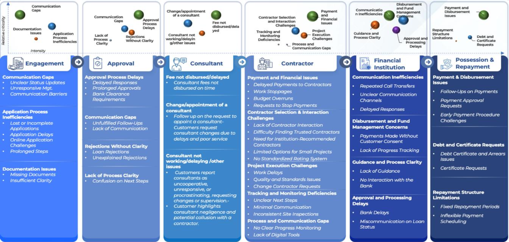
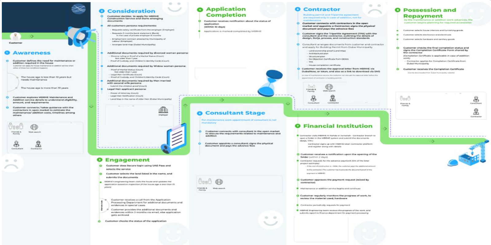
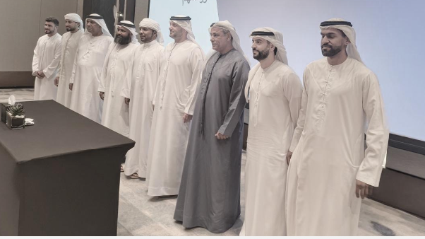

Customer Experience Transformation for a UAE Government Housing Authority
Government CX transformation requires a different model than commercial CX. Citizens expect world-class digital services – shaped by the commercial apps around them – while operating within legacy systems, long procurement cycles, and complex internal approval structures. GreyRadius navigated all three.
The Situation
Citizen expectations set by world-class commercial services. Legacy systems that couldn't be replaced overnight. A CX transformation brief with political as well as operational dimensions.
A UAE government housing authority had received sustained feedback from citizens that its service delivery – across housing applications, maintenance requests, eligibility assessments, and contract management – was fragmented, opaque, and slow. In a country where citizens routinely interact with world-class commercial services (banking apps, e-commerce platforms, healthcare portals), the contrast with government service delivery had become a visible point of dissatisfaction.
Leadership had a mandate for transformation – but was operating within real constraints: legacy IT infrastructure that couldn't be replaced in a single cycle, procurement timelines that didn't match commercial sprint rhythms, and a large internal team whose working practices would need to change alongside any technology investment.
GreyRadius was engaged to deliver a structured CX diagnostic and transformation roadmap – mapping the citizen journey, identifying the highest-impact pain points, and designing a sequenced improvement plan that worked within the authority's operational and budget realities.
Engagement at a glance
Client
UAE Government Housing Authority
Service
Opportunity Assessment · AI Consulting
Journey scope
5 citizen journey stages; 12 identified pain points
Output
Digital transformation roadmap; 3 priority interventions
Three structural constraints that make government CX transformation different from commercial transformation.
Legacy system constraints
The authority's core systems – housing applications, eligibility databases, maintenance tracking – were built on legacy infrastructure that couldn't be decommissioned within the transformation window. Any improvement roadmap had to work around existing systems rather than replace them, requiring a different design approach than a greenfield digital implementation.
Citizen expectations vs. operational reality
UAE citizens interact daily with some of the world's best digital consumer services – and those interactions set their expectations for all service providers, including government. The expectation gap between what citizens experienced and what the authority could deliver was not primarily a technology problem. It was a process and prioritisation problem that technology alone wouldn't solve.
Internal change complexity
A CX transformation roadmap that didn't account for the working practices, incentive structures, and capability levels of the authority's internal teams would fail at implementation. The diagnostic needed to surface not just technology gaps but process gaps – and the roadmap needed to sequence changes in a way that the internal team could absorb without operational disruption.
Citizen journey mapping. Pain point prioritisation. A sequenced roadmap that works within real constraints.
Citizen journey mapping across five stages
Conducted structured citizen research – combining interviews, service log analysis, and frontline staff workshops – to map the complete citizen journey across five stages: initial inquiry and eligibility assessment, application submission, documentation verification, decision and notification, and ongoing tenancy and maintenance management. Each stage was mapped at the touchpoint level, capturing the channels used, the information exchanged, and the emotional experience at each step.
Pain point identification & prioritisation
Identified 12 distinct CX pain points across the five journey stages – ranging from lack of application status visibility (the single most frequently cited complaint) to inconsistent documentation requirements across service channels, to the absence of proactive maintenance scheduling communication. Each pain point was scored on citizen impact (frequency and severity), operational root cause (process vs. technology vs. capability), and implementation difficulty – producing a prioritised matrix for the transformation roadmap.
Digital transformation roadmap
Designed a sequenced digital transformation roadmap that recognised the legacy system constraints – identifying where quick-win CX improvements could be implemented without system replacement (primarily through process redesign and interface improvements), and where the longer-term infrastructure investment would be required for more fundamental experience change. The roadmap was structured in three phases aligned to the authority's budget cycle and internal change capacity.
Three priority interventions
Defined three specific priority interventions as the first-phase focus: a real-time application status portal (addressing the most frequent pain point without requiring core system replacement); a standardised documentation checklist delivered at application initiation (eliminating the documentation inconsistency that was causing 40% of application delays); and a proactive maintenance scheduling notification system (enabling the authority to shift from reactive to proactive service delivery in its highest-volume service category).
"Government CX transformation requires a different model than commercial CX. GreyRadius understood the stakeholder complexity, the political constraints, and the operational reality – and delivered a roadmap we could actually implement."
Five journey stages mapped. Twelve pain points documented. A phased roadmap built for the real constraints of government.
Journey mapping
5 stages, full touchpoints
End-to-end citizen journey from initial inquiry through tenancy management – documented at touchpoint level
Pain points
12 identified & scored
Prioritised by citizen impact, root cause type, and implementation difficulty
Roadmap
3-phase delivery plan
Aligned to budget cycle and internal change capacity – quick wins in phase one, infrastructure in phase three
Interventions
3 priority actions
Status portal, documentation standardisation, proactive maintenance scheduling – implementable within current system constraints
Complete journey map across all five stages – with touchpoint inventory, channel usage, emotional experience, and the specific failure points generating dissatisfaction at each step.
12 pain points scored by citizen impact and implementation difficulty – with root cause classification (process, technology, or capability) for each and recommended ownership assignment.
Three-phase roadmap aligned to budget cycle and change capacity – quick-win improvements in phase one, process transformation in phase two, infrastructure investment in phase three.
Detailed implementation briefs for the three priority interventions – including system requirements, process changes, internal team impacts, and success metrics for each.
From the engagement



The citizen journey mapping was the most comprehensive diagnostic we had ever commissioned. It changed how we thought about our service design – from form-filling to genuine citizen experience.
"UAE government entities operate under a unique set of constraints: high citizen expectations set by the world-class commercial services around them, legacy systems that can't be replaced overnight, and procurement cycles that don't match commercial sprint timelines. The winning approach is to sequence quick-win CX improvements alongside the longer-term digital infrastructure roadmap."
Working on a government or public sector CX or digital transformation programme?
We've supported government entities across the UAE and wider GCC on citizen experience diagnostics, digital transformation roadmaps, and service design programmes. Talk to us.